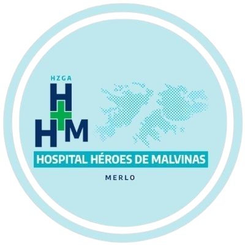

BIENVENIDO AL SISTEMA DE PEDIDOS DE TRASLADOS Y ESTUDIOS PARA PACIENTES
Elegir la opción correspondiente de acuerdo a su actividad
Médico (Pedido) Camillero (Recepción) Servicio de Imágenes Jefe (Historial)Elegir la opción correspondiente de acuerdo a su actividad
Médico (Pedido) Camillero (Recepción) Servicio de Imágenes Jefe (Historial)